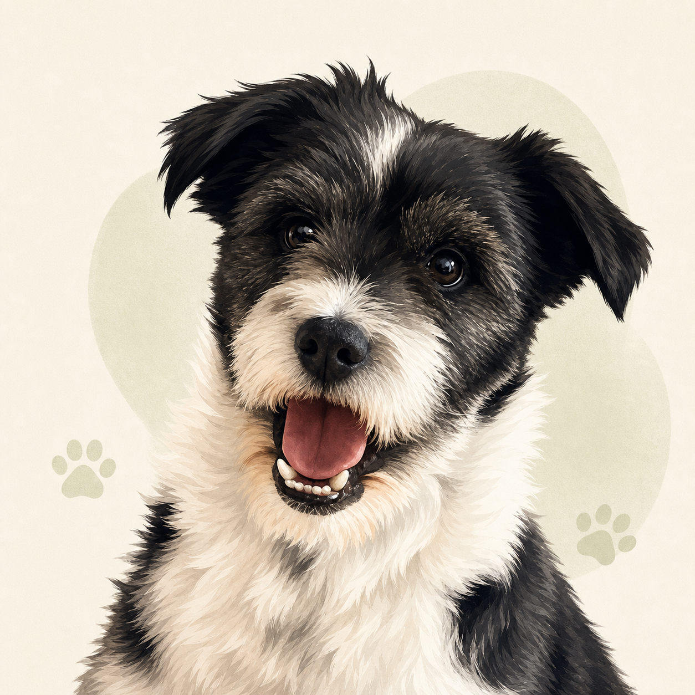

Zit
Steek één vinger rustig omhoog.
Alles wat je moet weten om Bobbies favoriete mens te worden.

Goed om te wetenSteek één vinger rustig omhoog.
Houd je open hand als een stopteken.
Wuif met een open hand laag over de grond, van je af.
Roep Bobbie enthousiast en ga laag bij de grond zitten.
Bobbie komt uit Bosnië, waar hij in het asiel heeft gezeten. Van zijn leven daarvoor weten we alleen dat hij buiten aan een ketting lag. Lieve mensen brachten hem naar Nederland, naar een boerderij met meerdere honden. Daar woonde hij ongeveer een week, totdat wij hem adopteerden en hij eindelijk thuis was.
Mogelijk Border Collie, terriër, Jack Russell en iets heerlijk langharigs.
Bobbie is op vakantie geweest naar Zwitserland en Frankrijk. Hij bezocht de prachtige Oeschinensee en maakte rondom Chamonix mooie wandelingen tussen de bergen.